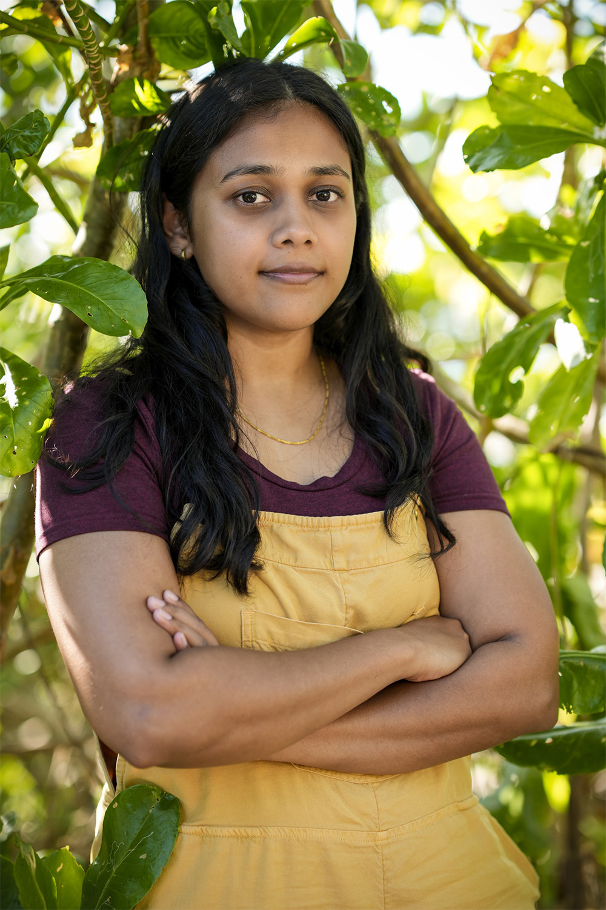
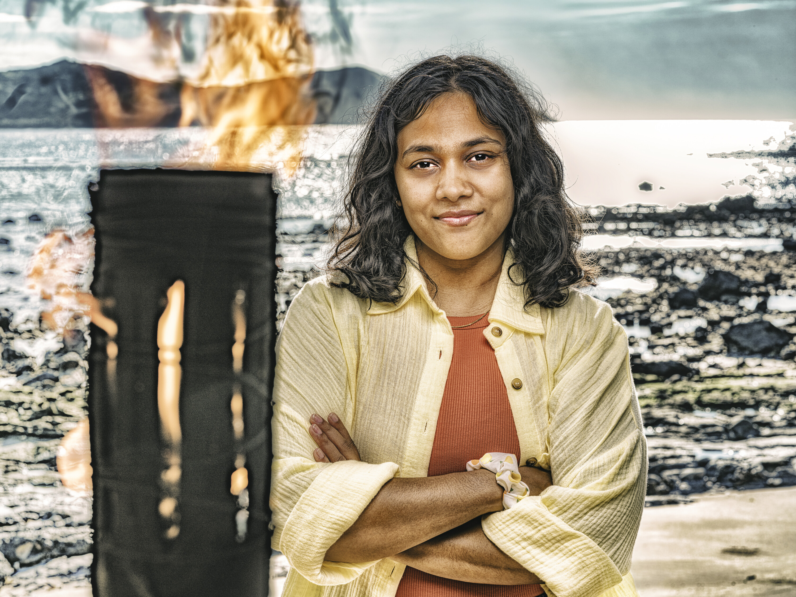

Kamilla Karthigesu


Episode 1
Kamilla joined the New Era women's alliance with Dee and Tiffany, excited to play a more cutthroat game than her Season 48 experience. She deferred to Tiffany's strategic direction, agreeing to target Chrissy. She and Chrissy got a head start on the puzzle portion of immunity, helping Kalo win. Pre-game data shows Kamilla is the only Kalo member who views Mike White as a "Foe."
Alliances
Part of the "Black Widow Alliance" with Dee and Tiffany. Following Tiffany's lead. Safe, low profile, and not on anyone's radar as a target.
About
Kamilla Karthigesu made it to the final episode of Season 48, where she lost to Kyle Fraser (who is also on Season 50). She's one of the rare players returning at the exact same age she debuted, due to the tight turnaround between seasons. Stephenie LaGrossa has called Kamilla someone who "concerns" her, noting that she "prides herself on lying and likes to lie" and is a "huge threat."